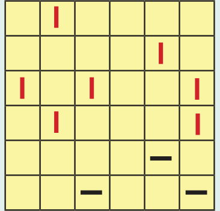
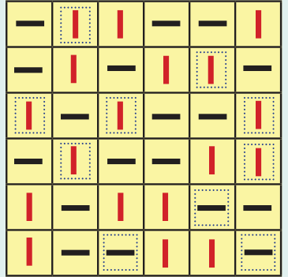
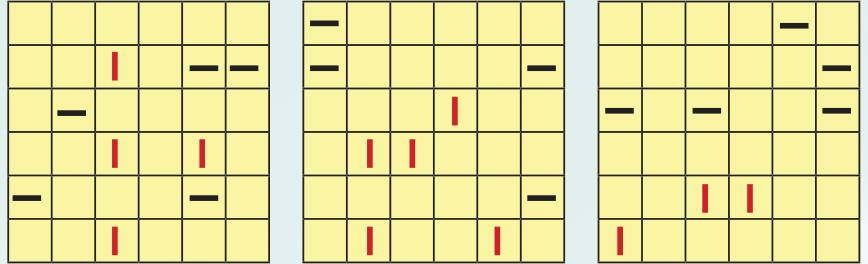

Ratios in the form of a : b indicate that for every ‘a’ unit of the first quantity, there are ‘b’ units of the second quantity. ‘a’ and ‘b’ are the terms in the ratio. Two ratios \(a : b\) and \(c : d\) are proportional (written a : b :: c : d) if their terms change by the same factor, i.e., if ad = bc. If x is divided into two parts in the ratio m : n, then the quantity of the first part is \(m \times \frac{x}{m+n}\) and the quantity of the second part is \(n \times \frac{x}{m+n}\) .
Binairo, also known as Takuzu, is a logic puzzle with simple rules. Binairo is generally played on a square grid with no particular size. Some cells start out filled with two symbols: here horizontal and vertical lines. The rest of the cells are empty. The task is to fill cells in such a way that:
- Each row and each column must contain an equal number of horizontal and vertical lines.
- More than two horizontal or vertical lines can’t be adjacent.
- Each row is unique. Each column is unique.


Puzzle Solution
Solve the following Binairo puzzles:
